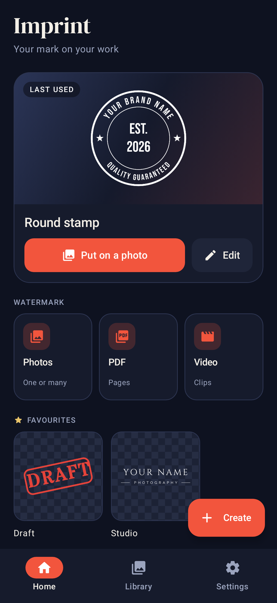
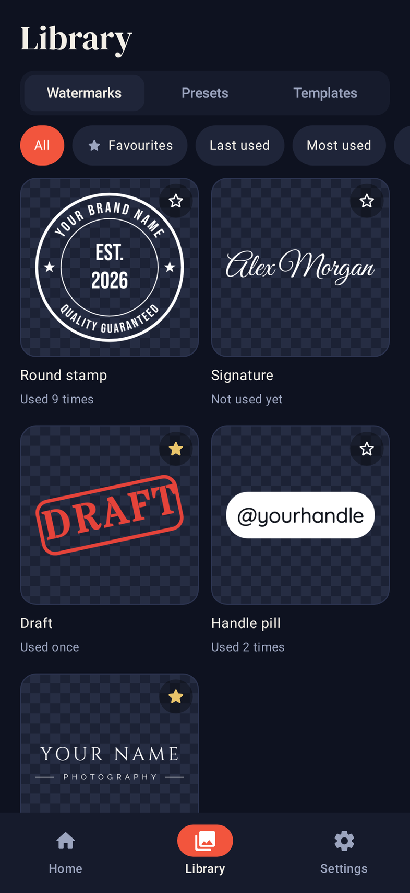
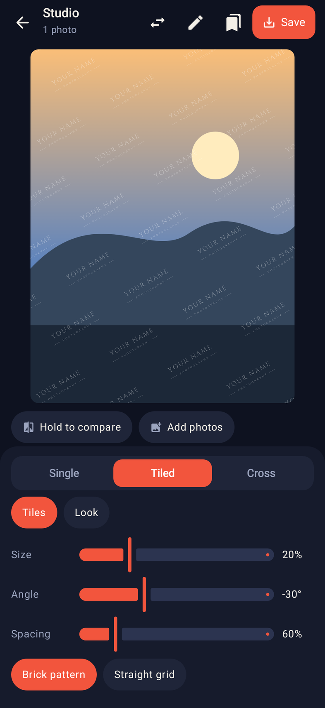
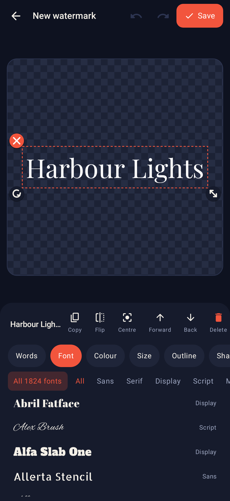
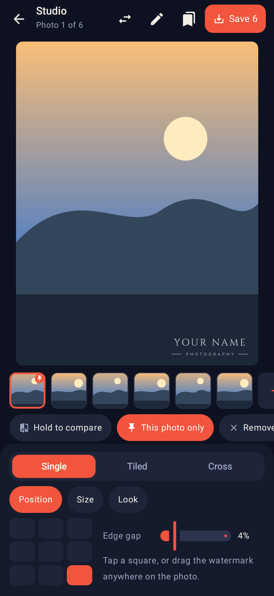
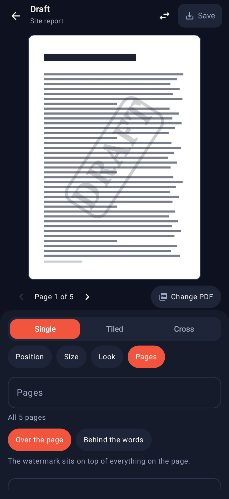
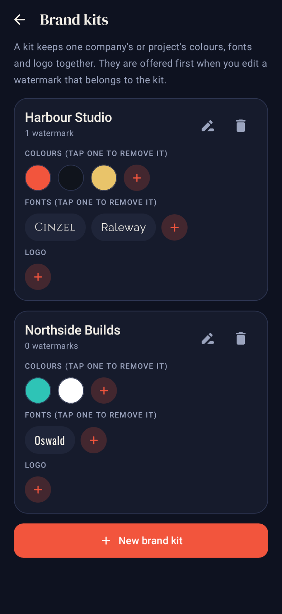

Your mark on photos, PDFs and videos
Imprint is an Android app for watermarking. Make a mark once, from words, a logo, shapes, a signature or a QR code, and put it on a photo, a whole batch of photos, a PDF or a video.
Your photos never leave your phone, and your originals are never changed: Imprint always saves a copy.
Download for AndroidHow to install
- Version 1.0
- Android 11 or later
- 22.2 MB
Free, with nothing to unlock. No adverts, no account with the developer, no tracking. Compare or read the release notes.
Chrome may say the file might be harmful. It shows this for app files that do not come from Google Play. Choose Download anyway.

- No subscriptionEvery feature is in the free app.
- No advertsNone in the app and none on this site.
- No uploadsEverything happens on your phone.
- Originals keptImprint always saves a copy.
A look inside
These are the real screens, drawn from the app's own code with made-up photos. Swipe or scroll sideways to see them all.






How it works
Make a watermark once and it is ready for every photo, PDF and video after that.
Make your mark
Start from one of 120 designs or a blank canvas. Type your name, add your logo, pick a typeface.
Place it
Choose photos, a PDF or a video. Put the mark in a corner, tile it across the picture, or centre it with corner lines.
Save copies
Imprint saves watermarked copies to their own folder. Next time, your last watermark is waiting on the Home screen.
Everything is in, and all of it is free
Nothing below is held back for a paid tier, because there is no paid tier.
Making a mark
- 120 designs to start from
- Copyright lines, signatures, round stamps, badges, Draft and Confidential marks and more, in eight groups. Every one can be changed.
- An editor that does the lot
- Words, logos and 14 shapes on one canvas, with outline, shadow, glow, a box behind the words and words bent round a curve.
- 1,824 typefaces
- 204 inside the app, the rest fetched from Google Fonts the first time you choose one, plus your own font files.
Placing it
- Three ways to place it
- Single, in nine positions or dragged; tiled across the whole picture at any angle; or a cross with lines to the corners.
- Light or dark, worked out for you
- Imprint can turn the mark white over dark areas and dark over light ones.
- Batches with a review strip
- Place the mark once on a set of photos, then check each one and move it on a single photo if needed.
Photos, PDFs and videos
- One mark, three kinds of file
- Photos save as JPG, PNG or WebP. PDFs stay PDFs, with their words still searchable. Videos save as MP4 with their sound.
- Moving marks on video
- A mark that sits still, or one that moves around the picture.
- Details in the file
- Your name and a copyright line can be written into the file's details too.
Saving time
- Last used, favourites and presets
- A preset remembers a watermark and exactly how it sits, so a repeat job is one tap.
- Brand kits
- Watermarks, colours, typefaces and logo grouped by company or project.
- Live stamps, signature and QR code
- Words that fill themselves in, a drawn signature and a QR code, each switched on in Settings.
Your photos are your business
Nothing is uploaded
Every photo, PDF and video is marked on your phone.
No servers
Imprint has no accounts and no servers. The developer collects nothing.
No ads, no tracking
There is no advertising, analytics or tracking, in the app or on this site.
Installing and updating
Imprint is not on Google Play, so your phone asks a couple of extra questions the first time.
Download the app file
Tap Download on your phone. The file is called Imprint.apk and is about 22.2 MB. If Chrome says the file might be harmful, choose Download anyway.
Allow the install
Open the file. The first time, Android asks you to allow your browser to install apps. Allow it, go back and tap Install. If Google Play Protect steps in, choose More details, then Install anyway.
Updating later
Imprint tells you when a newer version is out. Install the new file over the old one and everything you have saved is kept.
Version 1.0, released 19 November 2026. See the release notes, or check your download.
Questions
Is Imprint really free?
Yes. There is no paid version, no subscription and no adverts, and nothing in it is locked away.
Is Imprint on Google Play?
No. Imprint is a personal project and is downloaded from this site as an Android app file. It needs Android 11 or later.
Does Imprint upload my photos?
No. Everything is done on the phone. The app goes online for two things only: fetching a typeface the first time you choose one that is not built in, and looking up an address if you use the Address stamp.
Does it change my original photo?
No. Imprint saves a watermarked copy to Pictures, in a folder called Imprint. The original is left exactly as it was.
How do I watermark lots of photos at once?
On Home tap Photos and choose all the photos you want. Place the mark on the first one; the others follow. Use the strip along the bottom to check each photo, and tap This photo only to move the mark on one without changing the rest. Then tap Save.
Where are the date, signature and QR code?
They are switched off to begin with so the app starts simple. Open Settings, More tools, and turn on Live stamps or Signature and QR code. The buttons then appear in the editor.
Why is the location missing from my copies?
Android's photo picker removes it before any app sees the photo. Switch on Location under Settings, More tools. Imprint then asks to see your photos and uses its own photo list, which keeps the location.
Will the words in my PDF still be searchable?
Yes. Imprint adds the watermark to each page and leaves the page's own words as real text. Only the watermark itself is a picture.
Can I use my own font and my own logo?
Yes. In the editor open the full font list, tap Add my own and pick a TTF or OTF file. For a logo tap Logo and pick a picture such as a PNG or JPG; Imprint can clear a plain background and recolour it.
How do I move to a new phone?
In Settings choose Save a backup file. It holds your watermarks, presets, brand kits, logos, signatures, added fonts and settings. Copy the file to the new phone, install Imprint and choose Bring back from a file.
What happens if I uninstall Imprint?
Your library is deleted with the app, so save a backup file first. The photos, PDFs and videos you saved stay in Pictures, Documents and Movies.
How do I update Imprint?
Download the latest version from this site and install it over the one you have. Your library and settings are kept. Settings, About has a link to this site.
Make your mark once, and use it everywhere
Free, with no adverts and nothing to unlock. Made by the developer of several other free Android apps: see them all.